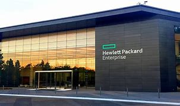

Hewlett-Packard Company, yang biasanya disingkat menjadi Hewlett-Packard atau HP adalah perusahaan teknologi informasi multinasional Amerika yang berkantor pusat di Palo Alto, California, yang mengembangkan dan menyediakan berbagai macam komponen perangkat keras serta perangkat lunak dan layanan terkait kepada konsumen, usaha kecil dan menengah (UKM) dan perusahaan besar, termasuk pelanggan di sektor pemerintah, kesehatan dan pendidikan.
Perusahaan ini didirikan di garasi satu mobil di Palo Alto, California oleh Bill Hewlett dan David Packard pada tahun 1939, dan pada awalnya menghasilkan sederetan alat uji dan pengukuran elektronik. HP Garage di 367 Addison Avenue sekarang ditunjuk sebagai Landmark Bersejarah California, dan ditandai dengan sebuah plakat menyebutnya “Tempat Kelahiran ‘Lembah Silikon'”.
Perusahaan ini mendapatkan kontrak besar pertamanya pada tahun 1938, menyediakan instrumen pengujian dan pengukuran untuk produksi film animasi Fantasia yang sangat sukses dari Walt Disney. Keberhasilan ini membuat Hewlett dan Packard secara resmi mendirikan Perusahaan Hewlett-Packard pada tanggal 1 Januari 1939. Perusahaan ini tumbuh menjadi perusahaan multinasional yang sangat dihormati untuk produk-produknya, serta gaya dan budaya manajemennya yang dikenal sebagai HP Way yang diadopsi oleh bisnis lain di seluruh dunia.
HP adalah produsen PC terkemuka di dunia dari tahun 2007 hingga kuartal kedua 2013, ketika Lenovo mengungguli HP. HP mengkhususkan diri dalam pengembangan dan pembuatan komputasi, penyimpanan data, dan perangkat keras jaringan, merancang perangkat lunak, dan memberikan layanan. Lini produk utama termasuk perangkat komputasi pribadi, server standar perusahaan dan industri, perangkat penyimpanan terkait, produk jaringan, perangkat lunak, dan beragam printer dan produk pencitraan lainnya.
Pada tahun 1939, Hewlett mendirikan perusahaan Hewlett-Packard (HP) bersama dengan David Packard yang meninggal pada tahun 1996. ini didirikan hanya dengan modal awal $ 538. Nama Hewlett-Packard tentu saja diambil dari nama mereka masing-masing. Di Hewlett-Packard Company, Hewlett pernah memegang berbagai jabatan penting. Namun sejak tahun 1978, Hewlett berhenti dari jabatannya sebagai Chief Executive Officer. Semasa menjadi mahasiswa, Hewlett menerima beberapa gelar dari berbagai universitas.
Pada tahun 1934, Hewlett mendapat gelar B.A (Bachelor of Arts) nya dari Stanford University. Gelar masternya dalam bidang Electrical Engineering, ia dapat dari Massachusetts Institute of Technology (MIT) pada tahun 1936. Dan 3 tahun kemudian, Hewlett menerima gelar insinyur dari Stanford University. Perlu diketahui juga bahwa Hewlett adalah orang yang menerima 13 Honorary Degrees dari berbagai universitas.
Sewaktu belajar di Stanford University, dia bertemu dengan David Packard yang akhirnya menjadi sahabat baik Hewlett. Perjalanan karir Hewlett bisa dibilang menarik. Selama perang dunia ke-2, Hewlett pernah bekerja di Angkatan Perang Amerika. Selama masa tugasnya di Angkatan Perang Amerika, Hewlett termasuk kedalam sebuah tim yang bertugas menginspeksi industri jepang ketika perang dunia ke-2 berakhir. Tahun 1947, Setelah kembali dari tugasnya itu, Hewlett pergi ke Palo Ato.
Ia mulai bekerja di perusahaan yang dia dirikan bersama David Packard itu, dan menjabat sebagai wakil presiden di Hewlett-Packard.company. Tahun 1957, menjabat Executive Vice President. 7 tahun kemudian, Hewlett menjabat sebagai President of HP. Pada tahun 1969, ia menjabat Chief Executive Officer. Hewlett memegang jabatan ini selama 9 tahun. Tahun 1978, dia berhenti dari jabatannya itu.
CEO Hewlwtt-Packard, Meg Whitman pada Senin (6/10/2014) secara resmi mengumumkan bahwa perusahaan yang dipimpimnya akan dibagi menjadi dua. Raksasa industri teknologi itu akan memiliki dua perusahaan baru dengan nama, Hewlett-Packard Enterprise dan HP Inc.
Hewlett Packard Enterprise, dikutip KompasTekno dari Bloomberg, Selasa (7/10/2014), akan menjual perangkat data center dan aplikasi terkait dengan layanan server. Sementara perusahaan HP Inc. akan berkonsentrasi dalam bisnis penjualan PC dan perangkat printer.
Dua nakhoda sudah disiapkan HP untuk menjadi pucuk pimpinan dua perusahaan, Whitman akan bertanggungjawab sepenuhnya atas Hewlett-Packard Enterprise, sementara Dion Weisler yang sebelumnya menjabat sebagai Head of PC and Printer akan menjadi CEO HP Inc.
Dengan membagi dua perusahaannya, HP berharap Hewlett-Packard Enterprise akan memiliki pendapatan 58,4 miliar dollar AS dengan profit operasi sebesar 6 miliar dollar AS. Sementara HP Inc. akan memiliki pendapatan 57,2 miliar dollar AS dan profit operasi 5,4 miliar dollar AS.
Bersamaan dengan pemisahan dua perusahaan tersebut, HP yang juga akan memberhentikan sejumlah 55.000 karyawannya. Sebelumnya, di bawah Whitman, HP telah memiliki program pengurangan karyawan yang jumlahnya mencapai 36.000 orang.
Menurut Bloomberg, Hewlett-Packard Enterprise akan menghadapi persaingan yang ketat di pasar server mengingat kompetitornya seperti IBM, Oracle, dan EMC saat ini telah memiliki profit dan cash flow yang lebih tinggi.
Sementara bagi HP Inc., saat ini perusahaan belum memiliki produk unggulan yang bisa menggebrak pasar dan menghasilkan pendapatan dalam jumlah besar. Transisi HP ke era mobile computing juga belum sepenuhnya selesai dilakukan.
HP mencoba melawan sikap pesimis para pengamat dengan memberikan argumen bahwa dengan membagi dua perusahaan, masing-masing perusahaan bisa lebih fokus membidik pasar dan bertindak lebih cepat.